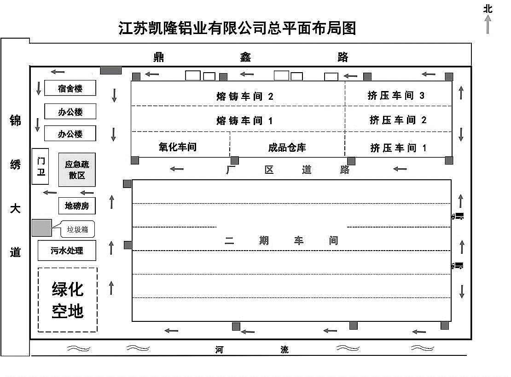
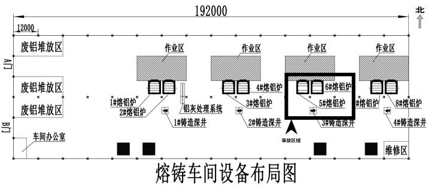

常熟市江苏凯隆铝业有限公司“10·31”较大爆炸事故调查报告
2019年10月31日16时05分许，常熟市支塘镇工业园区江苏凯隆铝业有限公司熔铸车间在铝棒铸造过程中发生一起爆炸事故，造成4人死亡，2人重伤，直接经济损失约万元。近日，苏州市应急管理局官网公布此起事故调查报告。
一、基本情况
（一）事故单位基本情况
江苏凯隆铝业有限公司（以下简称凯隆公司）成立于2011年2月24日，统一社会信用代码9132058156918692XU，注册资本16800万元，法定代表人陈喜龙。公司位于常熟市支塘镇锦绣大道52号，厂区占地总面积122312m2，员工总数235人，内设安全科，配备专职安全管理人员1人。主要经营范围：铝合金锭、铝铸件、铝型材及铝制品生产加工、销售；不锈钢、金属制品加工(不含电镀)、批发、零售等。凯隆公司2017年销售10.5亿元，2018年销售15.6亿元，2019年销售19亿元。
（二）事故相关单位基本情况
苏州新世纪金帆企业管理服务有限公司（以下简称新世纪金帆公司），成立于2002年6月3日，统一社会信用代码913205087382971624，注册资本为500万元人民币，法定代表人高蓉。公司位于苏州市西环路8号五楼，经营范围：提供企业管理方面的技术服务、安全评价（按安全评价机构资质证书经营）等。公司具有安全评价机构乙级资质证书（首次发证：2005年7月8日，有效期至2020年6月30日），证书编号为APJ-(苏)-325。业务范围：石油加工业，化学原料、化学品及医药制造业，金属冶炼业。该公司为凯隆公司安全现状评价单位。
（三）事故车间及设备基本情况
凯隆公司“新建22万t/a铝合金锭、铝铸件和铝型材及铝制品生产项目”于2010年6月立项，原计划分两期建设，其中一期车间于2016年5月投入生产，二期车间厂房于2017年建造完成后一直闲置至今。凯隆公司此次事故发生在一期车间内，该车间占地面积30445m2，为单层混凝土框架结构，由北向南分三跨，耐火等级二级。一期车间北侧是厂外道路鼎鑫路，南侧是闲置的二期车间，东侧是空地，西侧由北向南依次是一栋宿舍楼和2栋办公楼。一期车间由东向西分成两部分，东侧三跨由北向南依次为挤压车间1、挤压车间2、挤压车间3，西侧由北向南依次是熔铸车间1、熔铸车间2、氧化车间和成品仓库。熔铸车间1由西向东依次设有8台天然气固定熔铝炉（熔铝炉号依次编为1-8#，容量均为25吨）及4套铸造设备（每套设备含1台铸造机及1口铸造井，浇铸机及铸造井依次编为1-4#），上述设备均于2016年5月投入生产。每2台熔铝炉配备1套铸造设备。天然气熔铝炉、铸造机（包括铸造盘、铸造底座、卷扬机（含4根钢丝绳）、铸造控制器等）等熔炼铸造设备，均由张家港市新联成铝材设备有限公司生产，并由该公司进行安装调试后投入使用。发生事故的3#铸造井，由混凝土砌筑，井深11米，井壁厚0.25米，井口为2.5 × 2.5米的正方形，由凯隆公司根据新联成公司提供数据组织挖建而成。


（四）铝棒生产工艺情况
熔铸车间共有员工53人，分2个班，每班分别配备6名炉前工、5名铸造工及其他辅助工，车间主任任申。生产铝棒的主要原材料是纯铝锭及废铝，采用行业内广泛使用的深井式铸棒工艺。每班上工后先由炉前工操作天然气熔炉，将原料铝材熔炼、精炼成铝液（铝液温度依不同规格铝棒在730°上下）。铸造前，铸造工先将铸造模具（上部为铸造盘、下部为铸造底座，由螺栓固定在一起）吊至铸造井升降平台上，随后将固定螺栓拧开，掀起铸造盘，对盘内结晶器进行清扫、修模、上油，再将铸造盘合上。开始铸造时，先打开冷却水阀门，对结晶器进行喷淋冷却，然后打开熔铝炉铝液出口，将熔铝炉内静置的铝液放出，铝液经外部引流槽流淌至铸造盘结晶器内。铝液经结晶器冷却结晶成铝棒于铸造底座之上，随后启动卷扬机牵引升降平台，使升降平台上的铸造底座按一定的速度下降，将铝棒下拉至铸造井中，铸造井中注有冷却水，使铝棒继续冷却，直至完全结晶。铝棒铸造过程中，需要铸造工通过调整结晶器冷却水流量或者升降平台下降速度，确保被拉出的铝棒已经结晶成形，一旦铝棒未经结晶成形即被拉出结晶器（俗称“拉漏”），铝液就会从结晶器处泄露并流入铸造井内。
（五）企业审批、安全评价情况
1.企业审批及相关情况
凯隆公司“新建22万t/a铝合金锭、铝铸件和铝型材及铝制品生产项目”于2010年6月23日由常熟市发改委准予备案（常发改备〔2010〕438号）。2013年12月27日，凯隆公司收到1#、3#、4#、5#车间常熟市公安消防大队的《建设工程竣工验收消防备案复查意见书》（苏熟公消竣复字〔2013〕第0028号），同意投入使用。2010年11月，凯隆公司委托环评单位编制了《江苏凯隆铝业有限公司新建22万t/a铝合金锭、铝铸件、铝型材及铝制品生产项目环境影响报告书》，并于2010年12月16日，获常熟市环保局审批意见“常环计〔2010〕389号”，同意项目建设。
2015年6月20日，凯隆公司委托江苏宁大卫防检测技术有限公司对工作场所进行了定期检测，并出具了检测报告（编号为20156088）。2017年12月30日，凯隆公司经原常熟市安监局组织考核验收，取得安全生产标准化三级企业（有色），有效期至2020年12月（证书编号为苏AQB320581YSIII201800001)。2019年3月，凯隆公司完成了新建项目（一期）《较大危险因素辨识及对应管控措施报告》。
2.安全评价情况
2016年5月，凯隆公司开始试生产，并委托新世纪金帆公司对公司新建项目（一期）进行了安全现状评价，相应的安全现状评价报告及生产安全事故应急预案于2016年12月2日提交至原常熟市安监局进行备案，并取得了常熟市安监局出具的《建设工程项目安全现状评价报告回执》。
新世纪金帆公司于2018年7月至2019年5月对凯隆公司安全生产条件进行了定期安全评价，经调查，评价过程及评价报告存在下列问题：（1）安全现状评价报告与事实严重不符，评价报告中未列出铝棒铸造设备，凯隆公司所属行业类别认定错误，将凯隆公司行业类别认定为C331结构性金属制品制造（实际类别应为C325有色金属铸造）。（2）未辨识出铝棒铸造过程中铝液泄漏遇水爆炸的风险。（3）安全评价师数量及专业配备不到位，未按照专业标准配备冶金及有色金属专业的安全评价师。（4）评价项目负责人形同虚设，未到实际地点开展勘验工作。（5）安评报告内部审核把关不严。评价报告内部审核意见中明确提出“火灾爆炸危险性分析中除了天然气，还应分析铝合金溶液遇水发生爆炸的内容”，但公司未根据审核意见对报告进行修改、完善。
（六）监督检查情况
1.常熟市应急管理局监督检查情况。2018年5月底，原常熟市安全生产监督管理局组织专家对全市20家冶金有色铸造重点企业（包括凯隆公司）进行安全诊断；2018年9月11日、10月17日分别组织专家进行复查，并实施季度性专项检查，企业对专家所提问题于2018年12月底之前全部整改到位。2019年3月21日，常熟市应急管理局再次组织专家对全市60家冶金有色铸造重点企业（包括凯隆公司）进行安全诊断，其中对凯隆公司包括熔铸车间在内的现场生产作业提出熔铝炉氮气扫线管涂黄色标错误等16条问题，2019年4月20日组织专家对凯隆公司进行复查，企业全部整改完成。
2.支塘镇监督检查情况。2019年3月4日，支塘镇与凯隆公司签订安全生产目标管理责任书和常熟市工业企业安全生产承诺书。全年组织凯隆公司参加安全生产培训和安全生产会共计5次；支塘镇安监办网格安全员多次对凯隆公司进行日常安全检查，支塘镇党委书记、副镇长也分别带队对凯隆公司进行了日常安全检查；支塘镇委托江苏君信新华安全科技有限公司对凯隆公司进行了隐患排查。
二、事故发生经过及应急救援处置情况
（一）事故发生经过
2019年10月31日7时，凯隆公司熔铸车间开始上班，车间主任任申安排生产。当班作业人员共27人（其中铸造工5人、炉前工5人、辅助工17人），由炉前工操作3#、5#、6#、8#四个熔铝炉（1#、2#、4#、7#熔铝炉及1#铸造井处于停用备用状态）对原料铝材进行加温熔融，然后由铸造工再使用配套的2#、3#、4#铸造井将铝液铸造成铝棒。根据任申的安排，当班5#、6#熔铝炉炉前工是李松伟，负责铝液熔融、精炼，配套5#、6#熔铝炉进行生产的是3#铸造井，铸造工王波、王常洪，由王波带班，负责铸造Φ305 × 6000mm规格的铝棒（一次铸造16根）。通过查看现场监控视屏和询问相关当事人，过程如下：7:00左右，王波和王常洪对上一班留在3#铸造井上的6 * 6铝棒铸造磨具进行清扫、保养作业。
7:36左右，王波和王常洪开始将3#铸造井上的6 * 6铝棒铸造模具更换成为4 * 4（一次铸造16根铝棒，每根直径305mm）铝棒铸造模具。
7:45左右，王波和王常洪对新安装的4 * 4模具进行清理、涂油作业，直至8:15作业完成。随后，两人离开作业现场。
7:45 - 15:02，由于6#熔铝炉正在准备铝液，3#铸造井作业区域现场无作业人员。
15:02左右，王波和王常洪先后回到作业岗位，准备开始铸造铝棒。
15:06左右，王波先打开3#铸造井冷却水阀门（阀门位于3#铸造井东南侧约2米处），王常洪再拔出6#熔铝炉铝液出口的锥形堵头放出铝液，铝液经溜槽进入结晶器开始结晶。接着，王波首次调整了喷淋在结晶器上的冷却水流量和铸造底座的下降速度，控制铝棒铸造速度（流量大小和速度快慢企业无技术规范，依据经验操作）。
铝棒铸造过程中，为了加快进度，王波分别于15:11、15:17、15:43、15:47、15:58五次调快了铸造底座下降速度（通过和以往现场监控视屏比较，王波五次调整速度平均为cm/min，正常速度在6.0 - 7.0cm/min。）为了配合底座下降速度，王波又于15:22、15:33、15:53、15:55四次错误操作调小了冷却水流量。
16:05左右，王波蹲在3#铸造井前观察铝棒时，铸造井内左侧铸造盘上大量铝液流入铸造井内，发生爆炸。事故发生时，铸造井内冷却水约10米深，水面离井口约1米，冷却水体积约62.5立方米；王常洪站在6#熔铝炉放铝口南侧，其余4名伤亡者不在监控画面中。
（二）应急救援情况
常熟消防救援大队接警后立即调派支塘、董浜、化工集中区、古里、梅李、沙家浜、高新园、特勤五、东南等9个中队共21辆消防车、116名消防员赶赴现场处置。同时第一时间上报上级部门，省消防总队、苏州市消防支队立即启动应急预案，调派苏州市、昆山、张家港、太仓大队地震救援编队共计22辆消防车、96名消防员和9只搜救犬赶赴现场处置。
事故后清点人数，凯隆公司有6名员工失踪。消防部门共组成10个搜救小组，在搜救犬及大型机械协助下，分8个片区对现场进行拉网式排查搜救，经多轮全力搜救，至事故当日17:30左右，救出李松伟、常胜军、张林3名员工并送往医院救治。江苏省、苏州市、常熟市卫健部门组织相关专家对伤者进行会诊救治。至19:20左右，李松伟经抢救无效死亡，张林和常胜军生命体征稳定。至当晚10:30左右，钱东遗体在车间北侧墙体下被发现。至当晚11:00点左右，王波遗体在车间里发现。至11月1日上午6:30左右，王常洪遗体于6#熔铝炉附近发现（死亡人员均为冲击伤）。
事故发生后，省应急管理厅、省消防救援总队相关负责人也带队前往现场对救援工作进行指导，苏州市委副书记、市长李亚平，市委常委、副市长王翔立即赴常指导事故救援工作。常熟市启动应急预案，市委、市政府主要领导、分管领导及应急部门第一时间赴现场开展救援工作。
三、事故造成人员伤亡和直接经济损失
（一）死亡人员
李松伟，男，身份证号：412724198602XXX，河南省太康县人，炉前工。
钱 东，男，身份证号：320520197309 XXX，江苏省常熟市人，机修工。
王常洪，男，身份证号：412724198601 XXX，河南省太康县人，铸造工。
王 波，男，身份证号：513030198504 XXX，四川省渠县人，铸造工，带班组长。
（二）受伤人员
张 林，男，身份证号：412724197109 XXX，安徽省怀远县人，氧化车间操作工。
常胜军，男，身份证：340321199302 XXX，河南省太康县人，铸造工。
（三）事故损失
事故造成直接经济损失约为817.1万元。
四、事故发生原因和性质
（一）直接原因
在浇铸过程中，工人为加快铸造进度擅自调快铸造底座下降速度、错误操作调小了结晶器冷却水流量，结晶器中的铝液尚未结晶就被拉出，导致铝棒拉漏，铝液大量泄漏至冷却水井中，冷却水瞬间汽化，体积急剧膨胀产生爆炸。
（二）间接原因
1.事故企业
（1） 凯隆公司安全管理严重缺失。未按规定要求配足专职安全生产管理人员，未严格落实安全生产责任制，未做到“一岗一责”，铸造工安全操作规程不完善；安全生产教育培训工作不到位，未针对生产实际情况开展对铝棒铸造作业安全操作规程的教育培训，员工安全意识淡薄，未熟练掌握岗位安全操作技能，未在作业过程中发现铝棒拉漏的事故隐患并及时采取措施予以消除。
（2） 凯隆公司未吸取江阴市易泽铝业有限公司“8·28”较大爆炸事故的教训。未针对公司深井铸造的生产工艺特点对安全生产条件和设施进行综合分析，预防深井铸造作业可能造成生产安全事故的安全技术措施缺失；对造成事故的较大危险因素辨识有疏漏；对铝棒铸造作业现场监管不到位，未及时发现员工操作错误的事故隐患并采取措施予以消除。
（3） 凯隆公司使用的深井式铸棒工艺为行业内普遍采用，其本质安全化程度不高，缺少安全联锁保护装置，未配置温度、进出水流量差检测及报警装置，铝棒拉漏后无法第一时间预警。
2.安全评价机构
新世纪金帆公司在对凯隆公司的安全现状评价中，安全评价师配备不足，无冶金或有色金属专业的安全评价师，缺乏冶金或有色铸造行业专业知识，不具备从事金属冶炼业安全评价能力，安全风险辨识不全面、不深入，评价报告与实际情况严重不符，缺少铝液在铸造井内遇水发生爆炸的内容，安评报告内部审核把关不严。
3.地方政府及监管部门
常熟市支塘镇政府及镇安监办落实属地安全监管责任不到位，没有认真督促工作人员履行好安全生产网格化管理规定，对凯隆公司落实安全生产责任制和开展安全生产教育培训的检查不全面、不深入，未能及时督促企业发现并整改安全管理缺失的问题，推动企业履行安全生产主体责任不到位。
（三）事故性质
经事故调查组调查认定，苏州常熟市江苏凯隆铝业有限公司“10·31”较大爆炸事故是一起生产安全责任事故。
五、对事故责任人员和责任单位的处理建议
（一）建议司法机关采取强制措施人员
鉴于凯隆公司违反安全生产法规从而发生较大爆炸事故，造成人员伤亡和严重经济损失，因此对凯隆公司涉嫌刑事犯罪的4名责任人，建议由司法机关依法追究刑事责任。
1.陈喜龙，男，江苏常熟人，江苏凯隆铝业有限公司董事长兼总经理，负责凯隆公司全面经营管理。陈喜龙疏于安全生产管理工作，督促、检查本单位的安全生产工作不到位，未及时采取措施消除事故隐患，对事故的发生负有责任，建议司法机关依法追究其刑事责任。
2.任申，男，四川渠县人，江苏凯隆铝业有限公司熔铸车间车间主任，负责熔铸车间生产、安全工作。任申疏于本车间安全生产管理工作，对熔铸车间工人安全教育培训不到位，对铝棒铸造生产过程安全监管不到位，对事故的发生负有责任，建议司法机关依法追究其刑事责任。
3.周培军，男，江苏常熟人，江苏凯隆铝业有限公司安全员，负责凯隆公司安全生产具体管理工作。周培军疏于安全生产管理工作，未组织、参与公司安全管理制度及安全操作规程的制定、完善，疏于日常安全教育培训工作，对事故的发生负有责任，建议司法机关依法追究其刑事责任。
4.王波，男，四川渠县人，江苏凯隆铝业有限公司熔铸车间铸造工，负责铸造铝棒。王波在铸造铝棒过程中操作错误，导致发生生产安全事故。鉴于王波本人已在事故中死亡，免予追究其刑事责任。
除在事故中死亡的王波外，其他3人目前取保候审。
（二）建议移交纪委监委处理人员
对于在事故调查过程中，发现的地方党委政府及有关部门的5名公职人员履职方面存在的问题，已移交苏州市纪委监委，由苏州市纪委监委按管理权限和规定程序提出处理意见并给予处理。
（三）建议给予行政处罚的单位和人员
1.江苏凯隆铝业有限公司对事故的发生负有重要责任，建议苏州市应急管理局依据《中华人民共和国安全生产法》第一百零九条第二项和《生产安全事故罚款处罚规定》第六条的规定，对其实施行政处罚。
2.新世纪金帆企业管理服务有限公司对事故的发生负有责任，建议苏州市应急管理局按相关法律法规规定给予其行政处罚。
（四）建议给予处理的相关责任单位
责成支塘镇党委、政府向常熟市委、市政府作深刻书面检查。
六、事故防范和整改措施
针对事故暴露出来的问题，为认真吸取该起事故的深刻教训，避免类似事故的发生，提出如下防范和整改措施：
1.以安全生产专项整治为契机，逐步淘汰安全生产条件差、传统落后的生产工艺和设施。常熟市及支塘镇政府和有关部门要深入开展冶金工贸等重点行业领域安全专项整治，尤其针对辖区内采用深铸井铝棒铸造工艺的类似企业，进行全面的安全检查和隐患排查，按照《省冶金等工贸安全生产专项整治实施方案》相关要求，对深井铸造工艺技术装备及报警装置进行更新改造，对生产工艺设备落后危及生产安全、不具备安全生产条件的，责令其立即停产整改，经整改仍不合格的，应依法予以关闭。
2.举一反三，督促各类企业落实安全生产主体责任，提升本质安全度。常熟市要深刻汲取事故教训，对辖区内高危企业重新进行安全风险评估，对生产过程中存在的危险因素进行辨识，并根据危险等级确定对策措施。此次事故的主要教训是员工违规作业、企业安全检查督促不力，因此，要以此为戒，督促企业建立、健全内部安全生产责任制，按规定要求配备专职安全生产管理人员，做到“一岗一责”并落实到岗、落实到人；要根据企业生产工艺特点，针对不同工艺操作岗位尤其是高风险岗位，制定完善的分级监管、巡查检查、带班管理制度，督促员工遵章守纪、依规作业，严厉查处违章作业、违反劳动纪律等不安全行为。加强对企业及员工安全意识、安全风险的宣传教育培训，提高员工安全意识及操作技能，将此次事故作为警示教育案例，警示辖区内的企业深刻汲取事故教训，坚决杜绝类似事故重复发生。
3.对金属冶炼新建、改建、扩建项目要严格执行“三同时”制度。按照国家相关法规、标准和程序，选择有设计资质的单位进行建设项目设计，按规定履行立项申请、审批、审查等各项程序，未设计或无资质设计的建设项目，一律不得投入生产和使用；严格按设计图纸组织施工，严格执行设计变更程序，不得随意改变工艺布局和增减设备；有关部门要按照国家有关规定对安全设施设计严格审查。企业必须按照《安全生产法》等有关法律法规要求，对建设项目的生产工艺、设备选型、厂区生产单元布局等设计中的危险源进行风险辨识，落实控制安全风险的安全技术措施，从源头上控制风险，确保建设项目本质安全。
4.加强对第三方中介机构的监管，督促其提高责任意识和服务质量。第三方中介机构要进一步提升专业服务意识，不断提高服务水平和质量，全面、客观、如实反映所服务的事项，杜绝重大疏漏和辨识错误，更好地帮助指导企业履行安全生产主体责任、提高安全生产管理水平。各级安全监管部门在购买服务对企业进行检查时，要进一步明确服务内容、服务要求，加强针对性确保对企业的检查不走形式，真正帮企业找出问题、解决问题。对承担购买服务工作中有疏漏和过失的中介机构予以警告和通报批评，情节严重的必须予以相应的行政处罚。
原文编辑: EHS资讯
原文链接: https://ehsinfo.cn/2020/06/08/凯隆铝业爆炸事故调查报告.html
版权声明: 转载请注明出处(必须保留作者署名及链接)